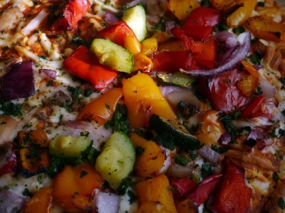

About Few Steps Meals
Simple, practical cooking made for real life.
Why This Site Exists
Few Steps Meals was created with one goal in mind: to make cooking easier, faster, and more approachable for everyone — no complicated steps, no long ingredient lists, just real food made simple.
Where Passion Meets Purpose
I’ve always loved cooking and I’ve always loved building websites. This project brings both passions together — creating a place where practical recipes and clean, thoughtful design work hand in hand.
The Vision
As the site grows, the goal is to keep everything clear, helpful, and easy to use. Whether it’s recipes, tips, or quick meal ideas, everything is designed to save time and reduce stress in the kitchen.